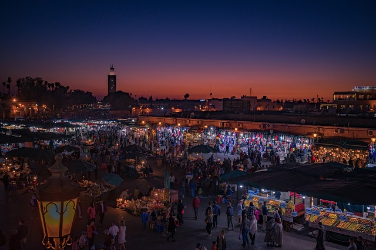

Travelling is great!
One of the things I enjoy the most is travelling. I love exploring new countries, seeing new faces, experiencing the culture and food. On top of that, I also love flying! So, if we have to take a plane to go somewhere, count me in!
Countries I have visited
- Morocco 
This is actually where I grew up. Although I was born in Washington, I lived in Morocco until I was about 5 years old. I also visited it many times during the summer when I was growing up. It is a beautiful country with lovely beaches, lots of farmlands, and a very friendly and welcoming culture.
- Spain
A large country on the southern end of Europe. Separated by only a small body of water from Morocco, I was able to visit a few times. On one occasion, I attended a family members wedding.
- France

I was born in Morocco, which was a very important French colony for over 40 years. As a result, many Moroccans are fluent in French, in addition to their native Arabic. This made France a very enticing place to visit. Not to mention it helped when I took French in high school.
- United Kingdom
An interesting visit, but my stay here was short lived so I wasn't able to fully experience the country.
- Syria
I recall travelling here as a child, but I was very young so I don't remember much about it. It was an arabian country, so there were a few similiarities to Morocco.
- Canada
A short distance from Washington, some naysayers would object that this doesn't count as leaving the country. Despite that, the few visits to Canada have been some of my favorites. One of the most beautiful places I have visited was the city of Victoria. It has incredible views of the Pacific Ocean and a very interesting contrast of neo-baroque, romanesque and modern architechture.
- United States
The United States is large, but fortunately, I have been able to explore a lot of it. So far, I have been to 19 out of the 50 states. I have travelled to all the corners. New York, Florida, California and Washington are some of the more notable states. I have even gone as far as Alaska, and visited a few different, very distanced cities.